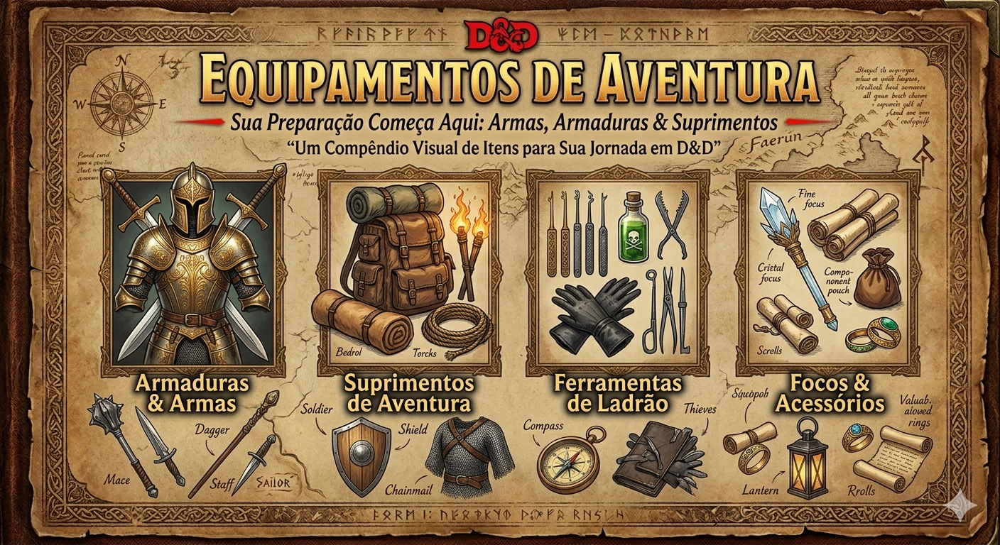

EQUIPAMENTOS

⚔️ Armas
🔹 Armas Simples
- Adaga – Dano: 1d4 (perfurante) | Leve, arremesso (curto)
- Clava – Dano: 1d4 (contundente) | Simples, corpo a corpo
- Bastão – Dano: 1d6 (contundente) | Versátil (1d8)
- Azagaia – Dano: 1d6 (perfurante) | Arremesso (curto)
- Arco Curto – Dano: 1d6 (perfurante) | Distância (24/96m)
🔸 Armas Marciais
- Espada Longa – Dano: 1d8 (1d10 versátil) | Versátil
- Espada Curta – Dano: 1d6 (perfurante) | Leve, finesse
- Rapieira – Dano: 1d8 (perfurante) | Finesse
- Machado Grande – Dano: 1d12 (cortante) | Duas mãos
- Lança – Dano: 1d6 (1d8 versátil) | Arremesso
- Arco Longo – Dano: 1d8 (perfurante) | Distância (45/180m)
🛡️ Armaduras
🟢 Leves
- Couro – CA: 11 + Destreza | leve
- Couro Batido – CA: 12 + Destreza | sem penalidade furtividade
🟡 Médias
- Brunea – CA: 14 + Destreza (máx 2) | média
- Peitoral de Escamas – CA: 14 + Destreza (máx 2) | média
- Couraça – CA: 14 + Destreza (máx 2) | sem furtividade
🔴 Pesadas
- Cota de Malha – CA: 16 | Força 13 necessária
- Cota de Placas – CA: 18 | Força 15 necessária
- Armadura Completa – CA: 18 | máxima proteção
🛡️ Escudos
- Escudo – +2 CA | usado com uma mão livre
🎒 Itens de Aventura
Exploração básica
- Rações – sustento em viagem
- Corda – escalada e amarração
- Tochas – iluminação temporária
- Odre – armazenamento de água
- Saco de dormir – descanso em viagem
Exploração útil
- Kit de primeiros socorros – estabiliza aliado (sem magia)
- Gancho de escalada – mobilidade vertical
- Pé de cabra – força bruta (portas e obstáculos)
- Espelho de metal – visão em locais perigosos
🧰 Ferramentas
Ferramentas principais
- Ferramentas de ladrão – abre fechaduras e armadilhas
- Kit de herbalismo – cria poções simples
- Ferramentas de artesão – criação e reparo
- Instrumentos musicais – performance e social
📌 Resumo Rápido
- Armas definem dano e estilo de combate
- Armaduras definem Classe de Armadura (CA)
- Itens ajudam exploração e sobrevivência
- Ferramentas desbloqueiam utilidades fora de combate